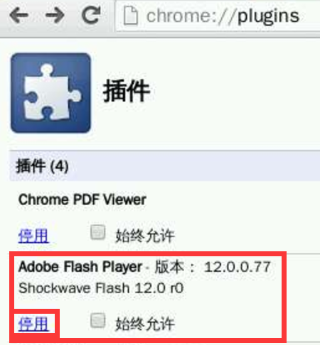
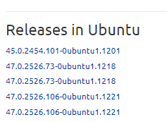
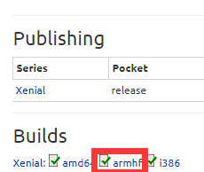
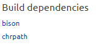

Chromium浏览器添加Flash插件
此文章尾部资源链接提供了两个版本的 PepperFlash ，12.0.0.77-1版本和15.0.0.152版本，两个版本自己挑个来用，其中12版本的基本没什么问题，15.0.0.152版本的 PepperFlash 插件 Flash 插件需要 GLIBCXX_3.4.20 支持，Ubuntu 14.04 系统的版本是 GLIBCXX_3.4.19 而无法使用，如果你使用的是更新版本的 Linux 系统可以直接下载使用 15.0.0.152 版本。Flash不能硬解是最让人不爽的，所以影视方面建议安卓或者OPENELEC。
安装：
先安装chromium-browser ，执行：
sudo apt-get install chromium-browser
Debian好像没有来着，不想自己编译去用ubuntu的。（底部有教程）
不过这个浏览器的每次出新版本都可能会有点问题。。。比如打不开。。
12版本的找到一直链可以直接执行wget下载：
wget http://odroidxu.leeharris.me.uk/repo/chromium-pepper-flash-12-12.0.0.77-1-armv7h.pkg.tar.xz
解压&拷贝文件到相应位置：
tar xf chromium-pepper-flash-12.0.0.77-1-armv7h.pkg.tar.xz
chmod +x ./usr/lib/PepperFlash/*
mkdir -p /usr/lib/chromium-browser/plugins/
sudo cp ./usr/lib/PepperFlash/* /usr/lib/chromium-browser/plugins/
15版本的需要手动下载，放到pi，解压，放到 /usr/lib/chromium-browser/plugins/ ，还得 chmod +x /usr/lib/chromium-browser/plugins/* ，实际上任意一处都行，只是后面要在相应配置文件的地址中改成你的地址。下面示例是放在用户目录~：
cd ~
tar -zxvf PepperFlash-15.0.0.152.r2-armv7h.tar.gz
chmod +x libpepflashplayer.so
mkdir -p /usr/lib/chromium-browser/plugins/
sudo cp libpepflashplayer.so /usr/lib/chromium-browser/plugins/
修改chromium-browser的配置：
sudo nano /etc/chromium-browser/default
文本编辑器随你自己习惯，我用的nano是Ctrl-O回车保存，Ctrl-X退出。
添加/修改如下内容：
12版本的：
CHROMIUM_FLAGS="--ppapi-flash-path=/usr/lib/chromium/plugins/libpepflashplayer.so --ppapi-flash-version=12.0.0.77 -password-store=detect -user-data-dir"
15版本的：
CHROMIUM_FLAGS="--ppapi-flash-path=/usr/lib/chromium/plugins/libpepflashplayer.so --ppapi-flash-version=15.0.0.152 -password-store=detect -user-data-dir"
完毕：
打开chromium-browser，输入地址 chrome://plugins 并访问，可以看到：

资源链接: http://pan.baidu.com/s/1geVyMQn 密码: pneu
netfix媒体支持（仅12版本的peper flash插件包中有）：
来源：https://zohead.com/archives/arm-chrome-flash/
修改配置文件为：（sudo nano /etc/chromium-browser/default）
# Options to pass to chromium-browser
IFS=" "
CHROMIUM_FLAGS="--ppapi-flash-path=/usr/lib/chromium-browser/pepper/libpepflashplayer.so --ppapi-flash-version=12.0.0.77 --register-pepper-plugins=/usr/lib/chromium-browser/pepper/libnetflixhelper.so#Netflix Helper#Helper plugin for the Netflix application#1.0.3;application/x-ppapi-netflixhelper"
需要特别注意的是上面的 Chromium 浏览器参数中含有空格（Netflix 插件名称等），会导致 Chromium 启动脚本解析出错，所以这里需要修改 IFS 分隔符为 TAB 键，CHROMIUM_FLAGS 变量中多个参数也必须以实际的 TAB 键（不可使用空格）隔开的，否则 Chromium 启动运行时会出现参数错误的问题。
Debian安装（也就arm这么麻烦而已）：
这里只是个例子：
访问：https://launchpad.net/ubuntu/xenial/+source/chromium-browser

随便挑个版本,32位arm(H3/H2+)选armhf

64位的arm(A64/H5)可选(旧版本可能没有)
然后底部找到下载
然后回去 https://launchpad.net/ubuntu/xenial/+source/chromium-browser
在底部找到

寻找如下依赖（实际上dpkg安装时提示缺啥就得补上），下载方法同上。
libgcrypt
然后我是放到一个目录下直接sudo dpkg -i *.deb
cd chromium-browser
sudo dpkg -i *.deb
慢慢更。。后续补上(已经补完)